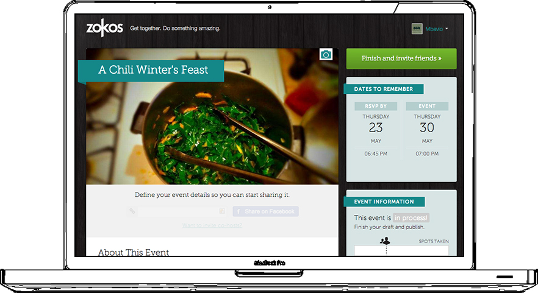
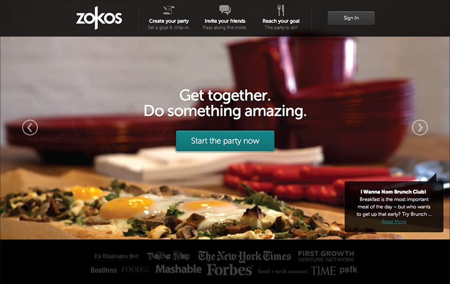
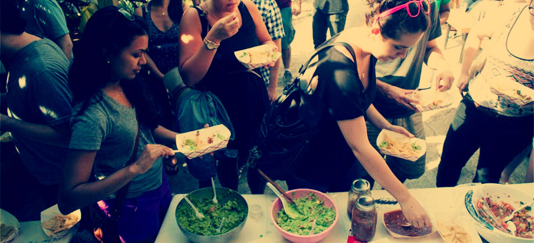
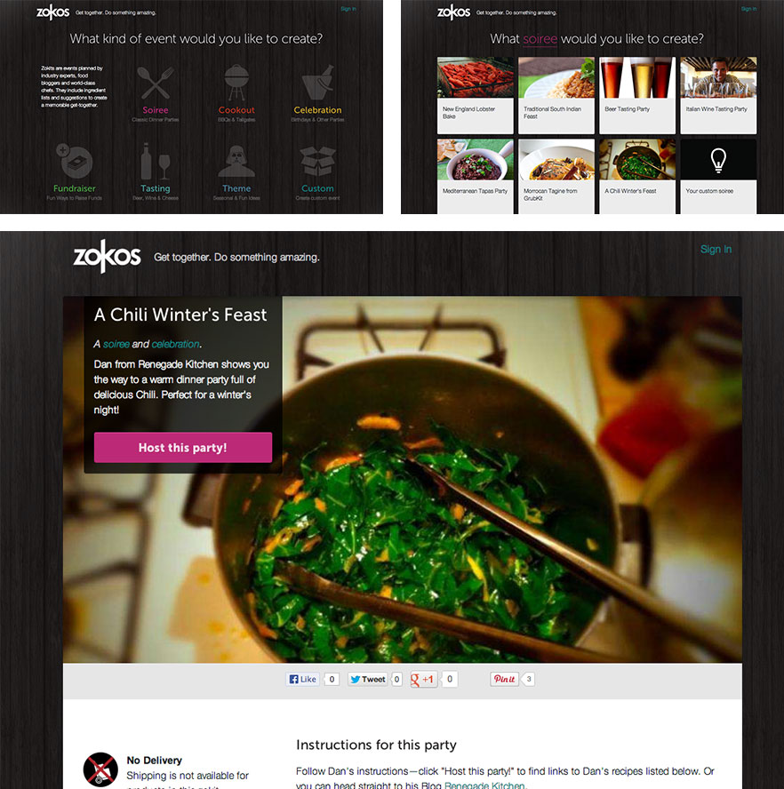
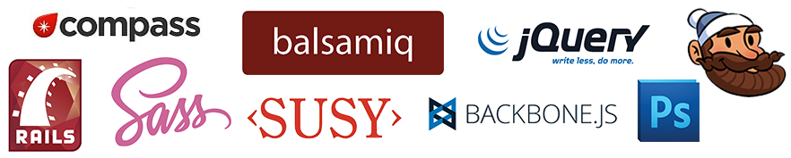

Having parties succesfully thrown was top priority, so we quickly found out that event view page was, with no doubt, the most important part of the site. We did a lot of A/B testing on it, refined multiple times, and in the end we had a version that most of our party hosts liked. We even implemented in-place editing to make it easy for them.
Zokos
Get together. Do something amazing.
Zokos is a NY based startup who aims to make it easier for people to connect in real life, over food. I joined the Zokos team to work on the user interface and the front-end of the web app.


We also needed a place where all the info related to events & food could be digested by the user, so we created a grid-based user dashboard.

We put some serious effort into the landing homepage. After a bunch of different ideas & versions, we ended up showing a carrousel of past succesful parties, in order to validate the idea for new users. We also showed press mentions to increase validation.

Lot of great parties were created using Zokos. Thousands of people have more fun by throwing parties with us. Food was never a problem!
After a couple of months, an important feature was added to the app: curated ideas for parties, or Zokits. We worked on the UX for adding them to the flow and ended up a some extra (optional) steps in the event create process, that helped users to throw parties faster.


What tools do we use to build the front-end?
We did most of our sketches in paper, then moved to Balsamiq Mockups propotypes, then used Photoshop to create high fidelity comps.
The web app was built in a Rails 3 environment, so the front-end took advantage of it to intregrate smoothly with a couple of things Rails has by default, like asset pipeline that automatically joins and minifies CSS & Javascript.
In order to build the front-end, we used semantic HTML5 for the markup, Sass + Compass + Susy for the visual styling, and jQuery + Coffeescript + Backbone.js for behavior and widgets. We also based our CSS architecture on concepts from SMACSS, and used Handlebars for Backbone templates.
Do you like what I do?
That’s great! You can contact me if you are interesting in my services. Wanna keep looking around? Read Educabilia case study.